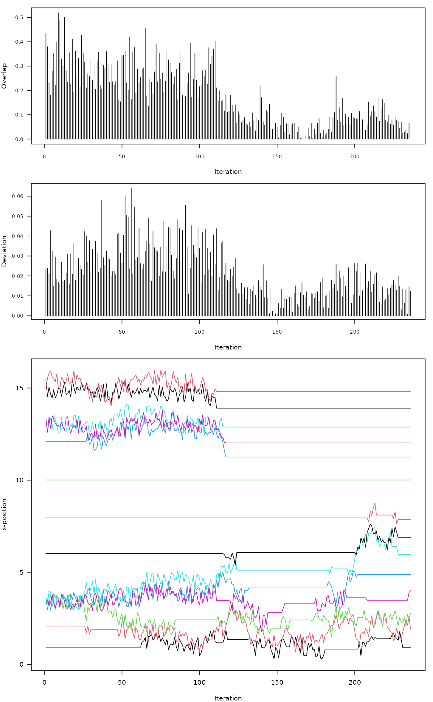

R/aqp-label-placement-solvers.R
SANN_1D.RdThis function makes small adjustments to elements of x until overlap defined by thresh is removed, or until maxIter is reached. Rank order and boundary conditions (defined by min.x and max.x) are preserved. The underlying algorithm is based on simulated annealing. The "cooling schedule" parameters T0 and k can be used to tune the algorithm for specific applications.
vector of horizontal positions, pre-sorted
horizontal threshold defining "overlap" or distance between elements of x. For adjusting soil profile sketches values are typically < 1 and likely in (0.3, 0.8).
specifies the size of perturbations within runif(min = adj * -1, max = adj). Larger values will sometimes reduce the number of iterations required to solve particularly difficult overlap conditions. See coolingRate argument when adj is large
left-side boundary condition, consider expanding if a solution cannot be found within maxIter.
right-side boundary condition, consider expanding if a solution cannot be found within maxIter.
maximum number of iterations to attempt before giving up and returning a regularly-spaced sequence
print diagnostics, result is a list vs vector
the smallest allowable overlap
starting temperature
cooling constant
not used, absorbs additional arguments to fixOverlap()
When trace = FALSE, a vector of the same length as x, preserving rank-ordering and boundary conditions. When trace = TRUE a list containing the new sequence along with information about objective functions and decisions made during iteration.
Ideas for solving difficult overlap scenarios:
widen the boundary conditions by adjusting min.x and max.x beyond the original scale of x
reduce the allowable overlap threshold thresh
reduce the magnitude of perturbations (adj) and increase maxIter
increase k
x <- c(1, 2, 3, 3.4, 3.5, 5, 6, 10)
# easy
z <- fixOverlap(x, thresh = 0.2, trace = TRUE)
#> 11 iterations
# harder
z <- fixOverlap(x, thresh = 0.6, trace = TRUE)
#> 37 iterations
# much harder
z <- fixOverlap(x, thresh = 0.9, trace = TRUE)
#> 88 iterations
# interpret `trace` output
# relatively challenging
x <- c(1, 2, 3.4, 3.4, 3.4, 3.4, 6, 8, 10, 12, 13, 13, 15, 15.5)
# fix overlap, return debugging information
set.seed(10101)
z <- fixOverlap(x, thresh = 0.8, trace = TRUE)
#> duplicates in `x`, applying jitter
#> 237 iterations
# setup plot device
par(mar = c(4, 4, 1, 1))
layout(matrix(c(1,2,3)), widths = 1, heights = c(1,1,2))
# objective function = overlap + SSD
plot(
seq_along(z$stats), z$stats,
type = 'h', las = 1,
xlab = 'Iteration', ylab = 'Overlap',
cex.axis = 0.8
)
# SSD: deviation from original configuration
plot(
seq_along(z$ssd), z$ssd,
type = 'h', las = 1,
xlab = 'Iteration', ylab = 'Deviation',
cex.axis = 0.8
)
# adjustments at each iteration
matplot(
z$states, type = 'l',
lty = 1, las = 1,
xlab = 'Iteration', ylab = 'x-position'
)

# trace log
# B: boundary condition violation
# O: rank (order) violation
# +: accepted perturbation
# -: rejected perturbation
table(z$log)
#>
#> B O + -
#> 41 114 78 3